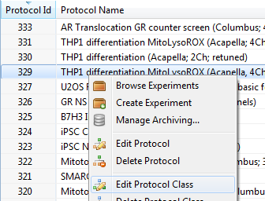
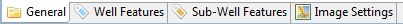
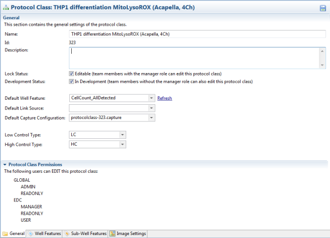
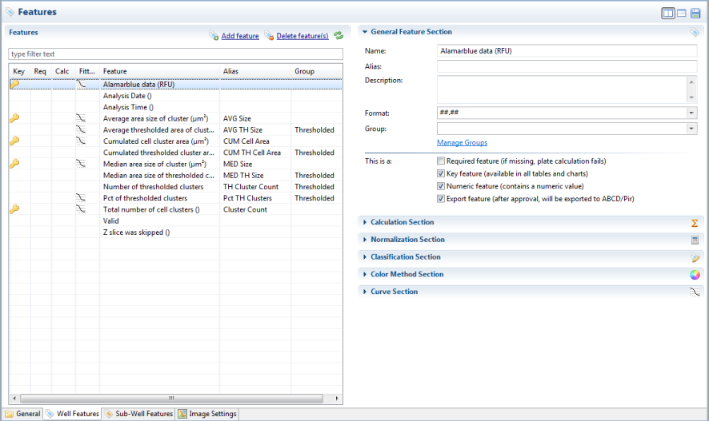

After setting up a new protocol (and corresponding protocol class), there is often a need to modify it afterwards. Especially during the assay development phase, protocols may change significantly over time.
Phaedra offers a tool called the Protocol Class Editor to allow you to make such modifications. To open this editor, right-click on a protocol and select Edit Protocol Class.

At the bottom of the editor, you will see 4 tabs:

- General: contains general information about the protocol class, such as its name, description and status.
- Well Features: here, the full list of well features is shown. Each feature can be configured individually: normalization, calculation, curve fitting, etc.
- Sub-Well Features: similar to the previous tab, but lists the subwell features instead.
- Image Settings: this tab shows the configured image channels, and a number of settings for each channel including contrast, bit depth, color mask, etc.
General Settings
This section contains general information about the protocol class, including its name, description and status.

Additional settings on this tab include:
- Default Well Feature: Select which well feature is displayed by default when you first access data from this protocol class.
- Default Link Source: Select which plate definition source is selected by default when you want to link plates with their plate definition.
- Default Capture Configuration: Select which data capture configuration is selected by default when you want to import data.
- Low Control Type: Select which well type represents the Low Control (i.e. no biological effect, or 0% effect).
- High Control Type: Select which well type represents the High Control (i.e. full biological effect, or 100% effect).
Well Features
In the Well Features tab, you can modify the list of available well features, and configure the details of each well feature.

The screen is divided into two panels: the left panel shows a list of well features, while the right panel shows the details of the selected feature.
In the left panel, the following information is shown:
- Key: if the feature is a key feature, a key icon is shown.
- Req: if the feature is a required feature, a star icon is shown.
- Calc: if the feature is a calculated feature, a calculation symbol is shown.
- Fitted: if the feature has a dose-response curve configured, a curve symbol is shown.
- Feature: shows the full name of the feature
- Alias: shows an optional short name for the feature
- Group: if the feature has been added to a Feature Group, the group's name is shown here.
If you select a feature, the right panel will show the following information in the General Section:
- Name: the feature's full name.
- Alias: the feature's short name (optional).
- Description: a description for the feature (optional).
- Format: if the feature is numeric, a format pattern for the feature's representation. Use this setting to define how many decimals should be displayed.
- Group: the Feature Group the feature belongs to (optional).
In the Calculation Section, you can enter a formula for the feature, to turn the feature into a calculated feature.
- Formula: the calculation formula for the feature.
- Language: the language the formula is written in (default JEP).
- Calculation: the trigger for recalculation (default: whenever the plate is recalculated).
- Sequence: a priority number for recalculation. Sequence 0 has the highest priority. Use this if you have multiple calculated features that depend on each other.
In the Normalization Section, you can choose a normalization method for the feature.
- Predefined method: select one of the available normalization methods here.
- Low Control Type: select which well type represents the Low Control (this overrides the value selected in the General Settings page).
- High Control Type: select which well type represents the High Control (this overrides the value selected in the General Settings page).
- Custom method: use this option to define your own normalization method formula.
- Language: the language the normalization formula is written in.
- Scope: the scope of the normalization: plate-wide or experiment-wide.
In the Classification Section, you can define a class list for this feature, turning it into a classification feature.
The pattern column determines the numeric value that represents a class. This is a very important concept and should be configured properly for correct classification results. There are two approaches:
Non-overlapping classes: a well can belong to only one class. Define the pattern as an incrementing binary number, for example:

Overlapping classes: a well can belong to two or more classes. Define the pattern as a binary number with dots as wildcards, for example:

In the above example, a well can belong to:
- Parent class only (pattern 0100)
- Parent class and child class 1 (pattern 0101)
- Parent class and child class 2 (pattern 0110)
In the Color Method Section, you can select and customize a coloring method for this feature, to use on heatmaps.
Select a color method from the list, and click Settings... to customize the color method.
In the Curve Section, you can configure the dose-response curve that should be calculated on this feature. The settings are:
- Curve Kind: the kind of curve to fit: One-Site Binding (OSB) or Lowest Active Concentration (pLAC).
- Curve Model: the curve model, depending on the selected kind.
- Curve Method: the fitting method, depending on the selected kind.
- Curve Type: the direction of the curve: ascending (A) or descending (D).
- Curve Threshold: for pLAC curves, you can specify a manual threshold here, instead of using a calculated threshold.
- Manual LB: for OSB curves, you can specify a manual lower bound, instead of using a calculating bound.
- Manual UB: for OSB curves, you can specify a manual upper bound, instead of using a calculating bound.
Sub-Well Features
In the subwell features tab, you can modify the list of available subwell features, and configure the details of each subwell feature.
The configuration is analogue to the configuration of well features. Refer to the previous topic for more information.
Image Settings
In the image settings tab, you can customize how images are rendered in Phaedra. An image consists of a series of image channels, which Phaedra displays on top of each other.
Each image channel can be configured with a color, contrast and several additional settings.
General image settings:
- Default image scale: when a well image is opened, it will be displayed at the selected scale by default.
- Gamma: select the default gamma that should be applied to the whole image.
- Pixel size: define the size (in square microns) of one pixel. This information can be used by calculated features to calculate exact areas and dimensions.
Image channel settings:
- Name: the name of the image channel
- Description: an optional description of the image channel
- Type: the type of the channel. Typically, Raw is used for images obtained from the instrument, while Overlay is used for label images generated by the image analysis routine.
- Bit Depth: the depth of the channel (i.e. bits per pixel). Default: 16 bits per pixel.
- Visible In: determine whether or not an image channel should be visible by default. In thumbnails, you may want to disable overlay channels by default, as they are poorly visible in small scales.
- Coloring: select a color mask for the image channel. Phaedra will render the channel in this color, to distinguish it from other channels.
- Alpha: set the alpha value (opacity) of a channel. A value of 0 means transparent, a value of 255 means opaque. For overlay channels only.
- Min, Max: set the contrast of a channel. For raw channels only.